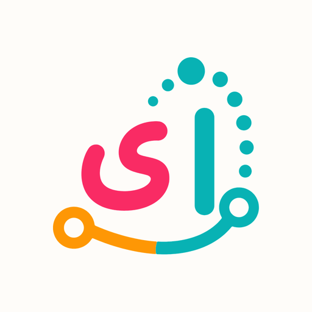

Questions, ideas or a problem with the app? Send us an email. We usually reply within a few days.
Please tell us your device (for example "iPad, iPadOS 18" or "Samsung, Android 15") and what happened.
Children who hear or speak Persian at home and want to learn to read and write it, with a parent nearby.
Tap the family button 👪 at the top of the home screen and solve the short sum for grown-ups.
Check that the device is not on silent and the volume is up. Then check the speaker button 🔊 on the home screen: if it shows 🔇, tap it to switch sound back on.
Tap any locked letter, solve the short sum for grown-ups, then tap "Restore purchase". Use the same Google or Apple account you bought it with.
No. Progress is saved only on the device. Deleting the app also deletes the progress. See our Privacy Policy.
پرسش، پیشنهاد یا مشکلی با اپ دارید؟ برایمان ایمیل بفرستید. معمولاً در چند روز پاسخ میدهیم.
لطفاً نوعِ دستگاه (مثلاً «آیپد، iPadOS 18» یا «سامسونگ، اندروید ۱۵») و آنچه پیش آمده را بنویسید.
برای کودکانی که در خانه فارسی میشنوند یا حرف میزنند و میخواهند خواندن و نوشتنِ آن را، کنارِ پدر یا مادر، یاد بگیرند.
در بالای صفحهٔ اصلی روی دکمهٔ خانواده 👪 بزنید و جمعِ کوتاهِ مخصوصِ بزرگترها را حل کنید.
بررسی کنید که دستگاه روی حالتِ بیصدا نباشد و صدای آن بالا باشد. بعد دکمهٔ بلندگو 🔊 را در صفحهٔ اصلی ببینید: اگر 🔇 نشان میدهد، رویش بزنید تا صدا دوباره روشن شود.
روی یکی از حرفهای قفلشده بزنید، جمعِ کوتاهِ بزرگترها را حل کنید و بعد «Restore purchase» را بزنید. با همان حسابِ گوگل یا اپلی وارد شوید که با آن خرید کردهاید.
نه. پیشرفت فقط روی دستگاه ذخیره میشود و با پاک کردنِ اپ پاک میشود. سیاستِ حریمِ خصوصی را ببینید.